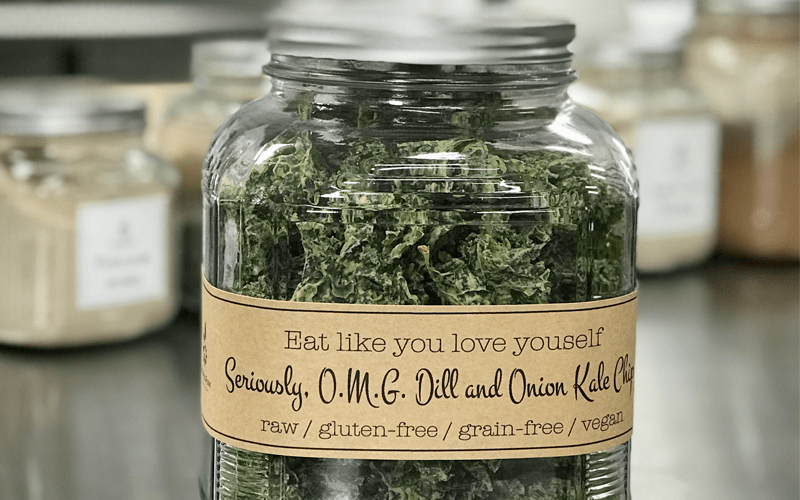

Seriously, O.M.G. Dill and Onion Kale Chips
– raw / vegan / gluten-free / grain-free –
These kale chips were made especially for my girlfriend, Gina, for her Super Bowl festivities! Several years ago, I had the greatest pleasure in introducing her to the wonderful, addictive world of kale chips! I love this woman dearly, and it brings me such great honor to make these for her.

I have been making kale chips for many years now, and I wanted to point out a few things that I have learned, which always provide me with great success. First of all, start with fresh, crisp kale. Not only do you get more nutrients from fresh kale, but the firmness will also be a fantastic base for a hearty chip. Plus, old wilted kale tends to be bitter. I also prefer curly kale over any other; all the beautiful folds within it offer great cubbies for the sauce to nestle in which will make the chips very flavorful.
Another helpful trick is to use a thick sauce, which makes giving the leaves a nice heavy coat much easier. Often, especially when making my kale chip recipes, you might doubt me, thinking that I made far too much sauce for the amount of kale being used. I do this for taste and structure! Trust me. :)
Also, don’t tear the kale into small pieces. The kale will shrink some while drying, and you don’t want to end up with tiny brittle flakes for chips, well unless, of course, that is what you want. Hehe, Washing the kale is essential, but most important is drying it! Either use a salad spinner or blot it over and over with dry paper towels. Wet kale will make your sauce runny, and it won’t stick well.
Lastly, after you pour the sauce over the kale, use your fingers to mix it all. Be gentle as you carefully massage the kale, making sure to coat each piece heavily. Don’t over massage, though, like we do when making kale salads. If you over massage the kale pieces, it will cause the membrane walls to break down and will weaken the chip.
Well, I think I covered it all. I hope you found my tips helpful. Are you new to making or trying kale chips? If so, I would love to hear from you.
Ingredients:
yields 3 cups sauce
- 2 cups cashews, soaked 2 hours
- 1 1/2 cups water
- 2 1/2 Tbsp raw apple cider vinegar
- 2 Tbsp fresh lemon juice
- 2 Tbsp dried onion flakes
- 1 tsp ground onion powder
- 1/2 cup packed fresh dill, minced
- 2 tsp black pepper
- 1/2 – 1 tsp Himalayan pink salt
- 2 heads (16 oz) curly kale
- Selecting Kale:
- Don’t use wilted / old kale; it can have a bitter undertone.
- I prefer Curly Kale because all of the folds really hold onto the sauce.
- Wash and de-stem your kale.
- Start by washing the kale and blotting it dry. You can also use a salad spinner if you own one.
- Make sure you get as much excess water off of the kale as possible. If you don’t, it will make your sauce “soupy.” Set aside.
- Starting at the bottom strip away the leaf, leaving behind only the stem.
- Tear the remaining leaves into pieces that are a tad larger than bite-size since they tend to shrink.
Sauce Prep:
- After soaking the cashews, drain and discard the water.
- In a high-powered blender combine the; cashews, water, vinegar, lemon juice, and spices. Blend until the sauce is creamy smooth.
- Due to the volume and the creamy texture that we are going after, it is important to use a high-powered blender. It could be too taxing on a lower-end model.
- Create a vortex in the blender; this will help ensure that the sauce is getting fully blended into a creamy texture.
- What is a vortex? Look into the container from the top and slowly increase the speed from low to high, the batter will form a small vortex (or hole) in the center. High-powered machines have containers that are designed to create a controlled vortex, systematically folding ingredients back to the blades for smoother blends and faster processing… instead of just spinning ingredients around, hoping they find their way to the blades.
- If your machine isn’t powerful enough or built to do this, you may need to stop the unit often to scrape down the sides.
- This process can take 1-3 minutes, depending on the strength of the blender. Keep your hand cupped around the base of the blender carafe to feel for warmth. If the batter is getting too warm., stop the machine and let it cool, then proceed once cooled.
Assembly:
- Place the torn kale into a very large bowl.
- Pour in the sauce and with your hands gently and evenly coat each piece of kale.
- This is a “hands-on” job. Stirring with a spoon doesn’t do the trick.
- I would suggest removing any jewelry from your fingers. I have temporarily lost a ring here and there.
Dehydrator Method:
- Have the dehydrator trays ready by lining them with non-stick teflex or parchment paper.
- Don’t use wax paper because food tends to stick to it.
- Spread all the trays out in advance because soon, your hands will be covered in sauce, and you don’t want to get it all over.
- I used three Excalibur trays.
- Place the kale on the non-stick sheets. You can do this 1 of 2 ways:
- Lay each piece out semi-flat if you want to create individual pieces. More time-consuming and chips tend to be a little bit more fragile.
- Or, drop clumps of coated kale on the sheets. This technique will create hardy clusters that are loaded with sauce and flavor. This is my preference.
- It took 3 Excalibur trays.
- Dehydrate at 115 degrees (F) for about 6-8 hrs or until dry.
- I tend to pull mine out before it gets 100% dry because I like it a little chewy.
- The dry time is just an estimate. The climate, humidity, dehydrator, and how full the machine is can all affect how long it will take to dry.
- Store in an airtight glass container and be ready to nibble non-stop till the last crumb is gone!
- If the kale chips start taking on some humidity from the house, you can place them back into the dehydrator for a few hours at 115 degrees (F).
Oven Method:
- Please use it as a guide and closely monitor the kale chips as they cook.
- Preheat the oven to 300 degrees (F), anything higher, and risk burning the chips.
- Line the baking sheet with parchment paper and place the kale chips on the baking sheet in a single layer.
- Bake for 10 minutes, rotate the pan, and bake for another 15 minutes.
- The bake times will vary based on your oven, but it’s a good starting off point!
- Once you pull the tray from the oven, allow the chips to cool on the baking sheet.
- Store in an airtight glass container and be ready to nibble non-stop till the last crumb is gone!
© AmieSue.com